Softech International Inc - AI/ML Log Analytics Project
- Building AI/ML-driven log analytics capabilities for operational intelligence, anomaly detection, alert correlation, and incident prioritization.
- Applying NLP, GenAI, embeddings, and LLM-assisted summarization to convert high-volume log events into actionable incident insights.
- Using Spark, Kafka, MLflow, and MLOps practices to support scalable feature engineering, model monitoring, and production inference workflows.